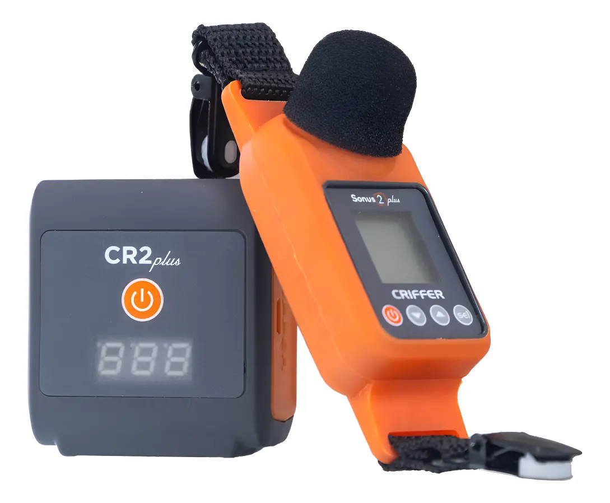
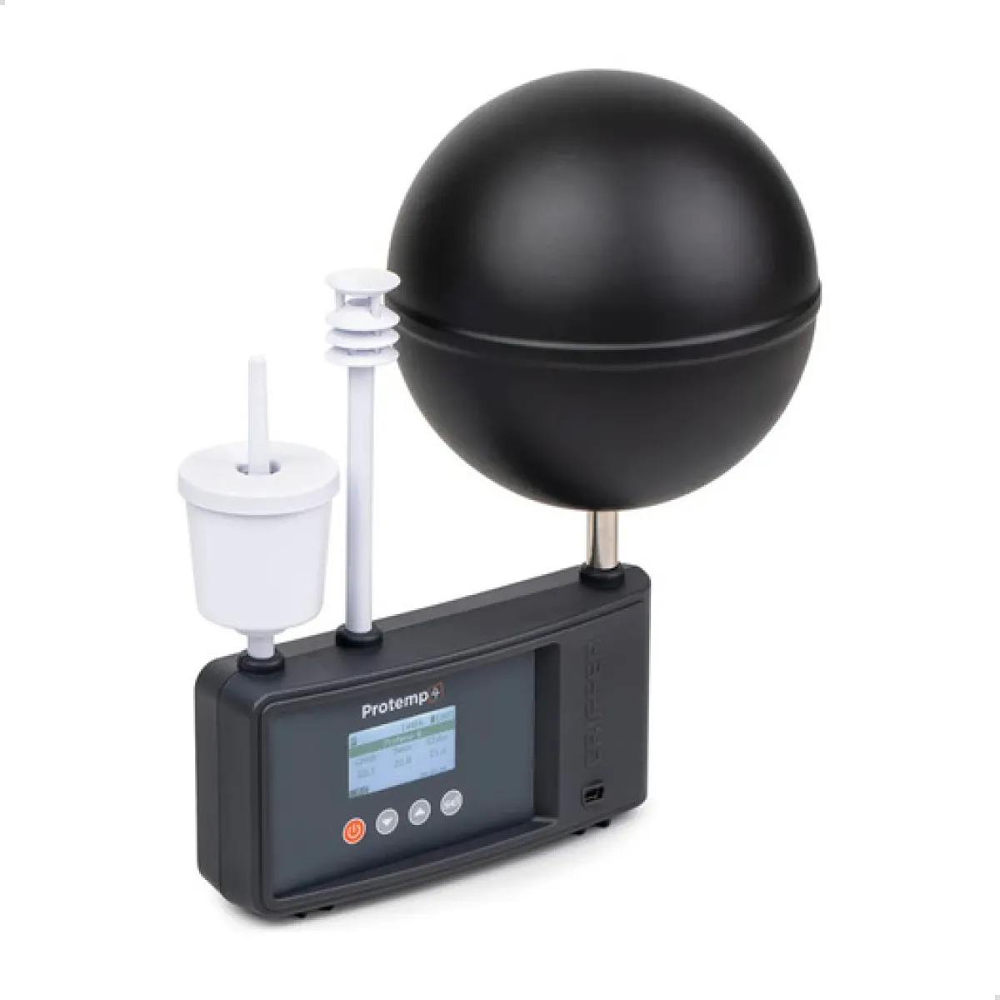
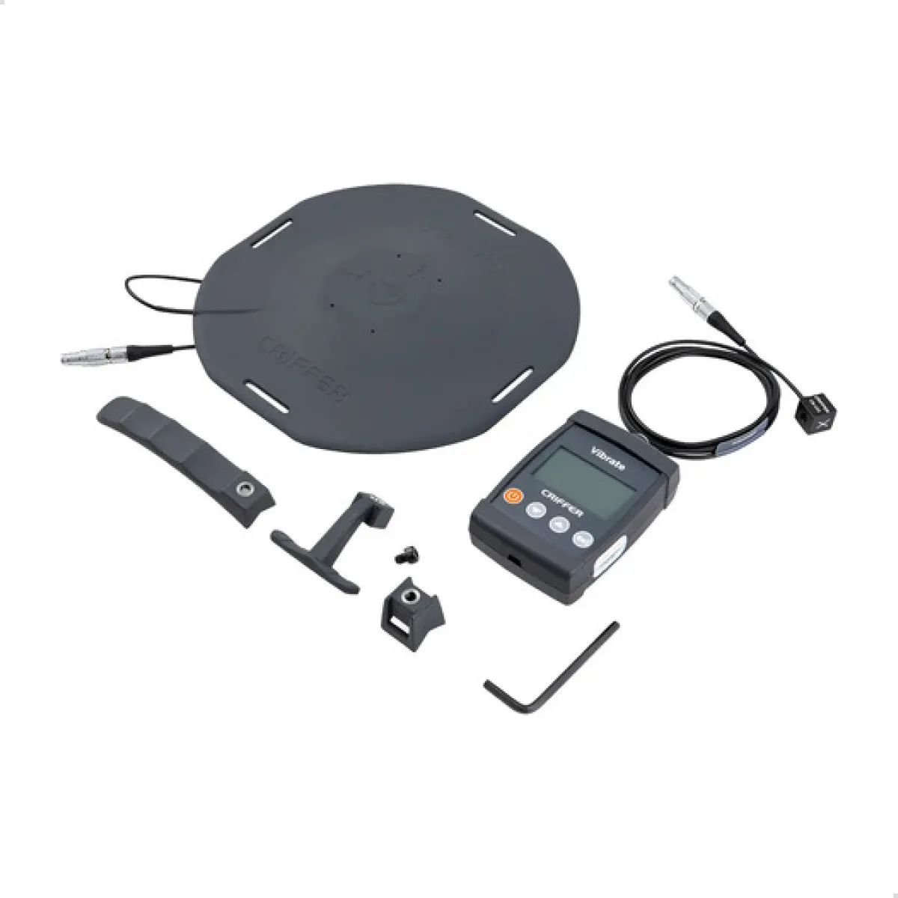
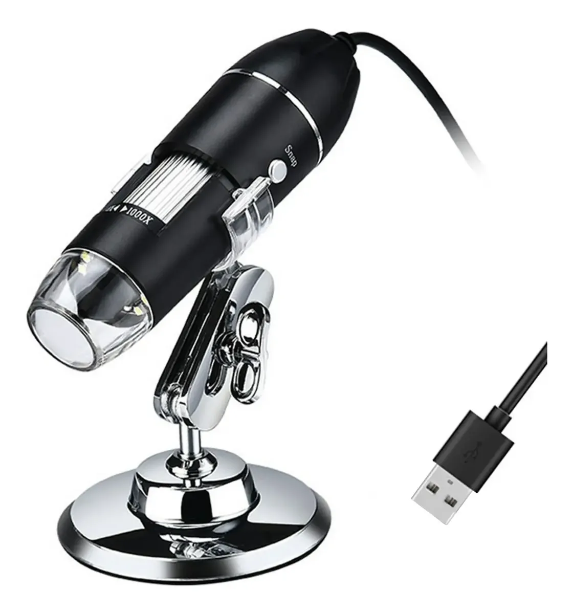
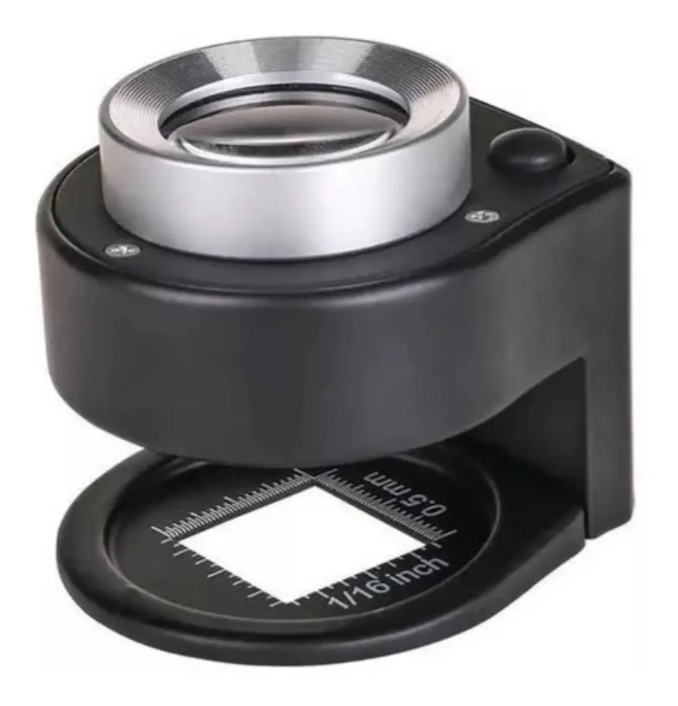

Perícia Grafotécnica
Análise rigorosa de autoria gráfica, falsificações de assinaturas e exames documentoscópicos com base em leis e diretrizes técnicas fundamentadas.

Atuação estratégica de Weisner Orsati Rodrigues em perícias trabalhistas complexas. Neutralização de passivos em Insalubridade (NR-15) e Periculosidade (NR-16), como também Perícias Grafotécnicas por meio de rigor metodológico e fundamentação técnica irrefutável.

Análise rigorosa de autoria gráfica, falsificações de assinaturas e exames documentoscópicos com base em leis e diretrizes técnicas fundamentadas.
Atuação como Perito do Juízo ou Assistente Técnico. Elaboração estratégica de quesitos, pareceres e acompanhamento de diligências processuais.
Avaliações de agentes ambientais (físicos, químicos e biológicos). Identificação, análise técnica e mitigação ativa de riscos à saúde do trabalhador.
Estruturação analítica de LTCAT, PGR, laudos de Insalubridade e Periculosidade (NR-15 e NR-16) com alta segurança metodológica corporativa.

Com trajetória sólida como Perito Judicial desde 2015 em diversas comarcas e Varas do Trabalho nos estados de São Paulo, Mato Grosso do Sul e Minas Gerais, Weisner Orsati Rodrigues alia rigor metodológico científico e profunda conformidade com a legislação trabalhista vigente.
Atuando como Assistente Técnico para departamentos jurídicos e empresas, o foco reside na neutralização de passivos infundados de Insalubridade (NR-15) e Periculosidade (NR-16). A metodologia abrange a formulação de quesitos estratégicos, acompanhamento ostensivo na diligência pericial e emissão de pareceres de alta densidade técnica capazes de desconstituir laudos desfavoráveis.
A atuação técnica se estende também à Perícia Grafotécnica e Documentoscopia, com exames de autoria gráfica, falsificação de assinaturas e confronto documental conduzidos com o mesmo rigor metodológico aplicado às perícias de insalubridade e periculosidade.
Contraprovas técnicas consistentes para fundamentar a tese defensiva nos autos.
Avaliação de riscos, conformidade de EPIs e gestão do PGR para prevenir contingências.


Solidez acadêmica em Engenharia, registros profissionais homologados e atuação pericial contínua desde 2015 em dezenas de Varas do Trabalho, Cíveis e Federais.
UnyPública
Prominas / Única
Universidade Paulista – UNIP
Fundação Educacional de Fernandópolis – FEF
Nero Perícias
Nomeações pelo Poder Judiciário e atuações estratégicas em assistência técnica de defesa:
Vivência técnica em gestão de SESMT, higiene ocupacional e auditorias sob normas internacionais (ISO 9001, ISO 14001 e OHSAS 18001):
Equipamentos próprios de alta precisão com calibração rastreável à RBC (Rede Brasileira de Calibração) e flexibilidade operacional para vistorias de qualquer porte.
Instrumentos certificados em conformidade com o MTE, NHO (Fundacentro), Inmetro e ABNT.

Avaliação de ruído contínuo, intermitente e de impacto com integração de dose diária e relatórios histogramados.

Determinação da sobrecarga térmica, medição de calor radiante e cálculo do índice IBUTG ponderado com taxa metabólica.

Aceleração triaxial simultânea para Vibração de Corpo Inteiro (VCI) e Vibração de Mãos e Braços (VMB) em frotas e maquinários.

Exame de sulcos, dinamismo de punho e sobreposição de tintas.

Luminescência, fibras de segurança e detecção de lavagens químicas.
Transiluminação óptica para detecção de raspagens e emendas.
Medição angular, paralelismo e confronto gráfico computadorizado.
Além do acervo instrumental próprio, mantemos convênio com laboratórios e fornecedores homologados para a imediata mobilização e locação de instrumentos complementares conforme as necessidades da diligência (ex.: bombas gravimétricas de poeira/vapores, luxímetros calibrados (NHO 11), detectores monogás/multigás e anemômetros), todos devidamente calibrados e certificados.
Desde abril, laudos de insalubridade circulam entre sindicatos e fiscalização do trabalho. Um primeiro balanço sobre os efeitos reais dessa mudança — e o que empresas e peritos precisam ajustar agora.
Selecione o canal de sua preferência ou envie uma mensagem direta pelo formulário de maneira ágil e segura.
Fale conosco em tempo real para tirar dúvidas e solicitações rápidas.
Acompanhe nossas análises de casos e atualizações técnicas da área.